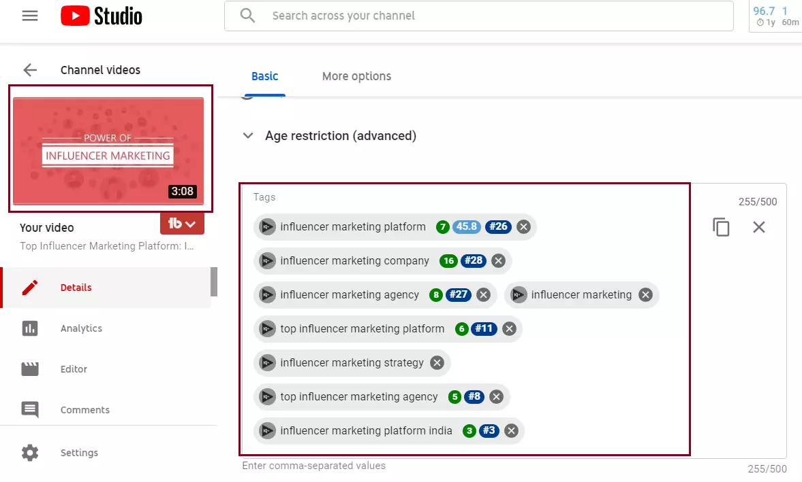
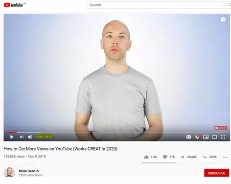
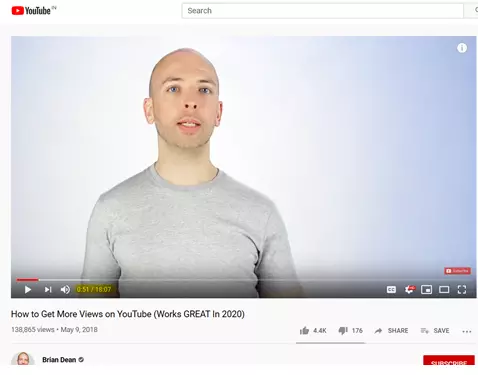
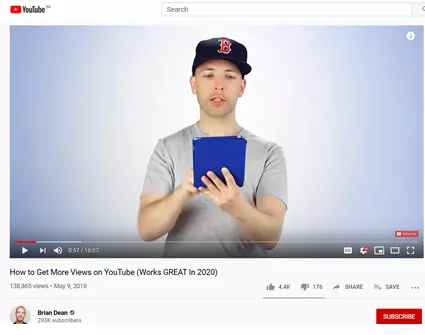
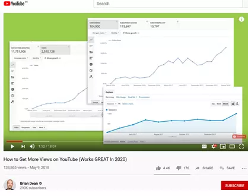
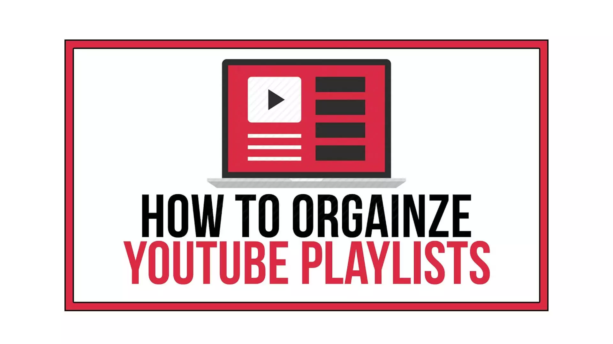

We all know that videos are the most preferred form of content people are consuming today and YouTube being a free platform has a big role to play in it. Everyday people watch over a billion hours of video and generate billions of views. According to YouTube, “YouTube has 2 billion + users i.e. 1/3rd of the internet”. Hence each and every Youtuber wants more and more subscribers for his / her Youtube channel, hence today, we are going to show you the best proven practices on how to get more Youtube subscribers in 2020 and grow your Youtube channel.
So, if you have just started out in the YouTube world or you have been around for a while and are not having satisfactory increment in your YouTube subscribers despite making quality content, here are some tips that will surely help you along get you more engagement in terms of subscribers, views, likes, shares, comments.
Contents
- 1. Decide a theme for your channel
- 2. Focus on the quality of your videos
- 3. Optimize your channel page
- 4. Use pattern interrupts
- 5. Interact with your audience
- 6. Design catchy video Intro, Outro and Thumbnails
- 7. Optimize video title and description
- 8. Use subscribe button as your branded watermark
- 9. Write an enticing channel description in the “About” section
- 10. Organize your videos into playlist
1. Decide a theme for your channel
The first and foremost thing to figure out before you start a YouTube channel is “What your channel is going to be about?”
Decide a theme (a niche of the niche) for your Youtube channel. For example, if you want to share your knowledge about running a small business, you can launch a channel dedicated to videos about starting and running a small business or if you love traveling you can start travel vlogging channel. This way you will get more subscribers that are not only relevant for your business / intent but they will give a lot better engagement.
Once you decide the theme for your channel, the next step should be doing a research about the keywords which people use to search videos on Youtube to watch. You can do keyword research with the help of various tools like Google Trends, Youtube search suggestion, Google Keyword planner, Bing search suggestions, Google search suggestions, Amazon search suggestion, Duck Duck Go search suggestions etc.
Insert your keywords into the Title tags, Meta Tags, Tags, Content to increase your Youtube subscribers organically.
Cover A to Z topics of your niche in your Youtube channel. Your goal should be to make your channel a ‘one stop destination’ for viewers who want to watch videos about a certain topic in depth and from all round.
This compels a viewer to spend more time on your channel and incredibly increases the chances of the viewer to convert into a subscriber.
Focus on the quality of your videos

Always give preference to quality over quantity. You are just wasting your effort and your content if you are not producing quality videos – in terms of content wise and video quality – HD / 4K etc wise.
According to YouTube Stats, “over 300 hours’ worth of video material is uploaded to YouTube every single minute” and the truth is if your videos are not top notch in terms of content and production style, your video will just get buried in this ocean of video content.
But here are some things you can do to stand out:
Edit your videos remarkably until you get what you desire. Make sure what you publish is a representation of your best efforts. If you don’t have your hand set in editing, hire a freelancer to do it for you but one way or another only your best work should see the light of the day. If you want to do it on your own make sure you get the right editing tools.
Using music in your background helps immensely in holding the viewer’s attention in a long video.
Always plan your video. Draft down a script for your video before you start filming it. Decide the sequence of events, what are you going to say and when and even the actions you are going to use in your videos!
Make a combination of burst and evergreen videos. Burst videos are what will attract viewers towards your channel and evergreen videos are what will make them spend more watch hours on your channel. This mix and match will definitely increase your Youtube videos organic reach.
Improve your camera presence. The better your camera presence, the more your viewers will feel as if you are talking directly to them and make them feel connect to what you are saying.
The thing that will help you most is becoming your own biggest critic: ask yourselves, “would you subscribe to your channel?”
Optimize your channel page

Once you manage to bring a viewer to your channel through your videos, the first thing they see is your channel page. Your channel page can act as your biggest subscriber bait.
Here’s how:
Your channel art says a lot about your seriousness towards your channel. It is always advisable to add a ‘subscribe’ link in the corner along with link to your other social profiles. Along with this create an awesome channel icon.

One of the most important thing on your channel page is your channel trailer. YouTube advises you to keep your channel trailer of about 30-60 second duration. Now it is your job to make these 30-60 seconds highly engaging and compelling. Your channel trailer should address the audience you intend to target, tell your own story about why you wanted to start this channel and an obvious call to action to subscribe your channel.

The next thing that can make you stand apart from other video content creators is a tagline for your channel. A tagline is a phrasal description of your content. For example, if you create videos about cooking your tagline could read- “baker’s stop”. Using this tagline in your channel trailer and channel art makes a huge difference.
Organize your videos on your channel page. Find out which videos converted the most viewers into subscribers from your YouTube Analytics and place those videos out front making it easier for the viewers to spot them.
Your channel page has huge potential to convert your viewers into your subscribers. You just have to follow these few tips and ultimately increase your YouTube subscribers.
Use pattern interrupts
“How do you keep people watching your videos to maximize watch time and keep them engaged?”

The answer to your question is “pattern interrupts”.

Pattern interrupt is something that causes a little interruption in a person’s chain of thoughts. So, if your video is long and you are afraid that this will hamper your audience retention, a few pattern interrupts here and that should do the trick.

YouTube itself states, “Try to keep your audience retention as close to 100% as you can manage. The more time viewers spend on your videos, the more prime they are to subscribe to your channel”.

Pattern interrupts need not be fancy or complicated. They can be as simple as change in camera angle or a zoom in on a particularly quirky facial expression.
Here’s a few things you could try out:
- Simple graphics’ pop up
- Jump cuts
- Light jokes
- A change of clothes
Try out these few tips and let us know which ones work out best for you to get more Youtube subscribers!
Interact with your audience

Always keep in mind, your audience should hold prime importance for you. Without your audience your channel can never grow. So always make it a point to interact with your YouTube community.
Whenever you film a video, make sure you end it on a high note calling your viewers to like, comment and share your videos and to comment how they felt about the video. Now your next job is to reply to as many comments as possible, at least within the first few hours of publishing. This shows your audience that they hold value for you. This will also increase your engagement ratio.
Heart your favorite comments! This a feature from YouTube that allows you to heart your favorite comments and whenever you heart a comment, the user gets a notification which makes them more likely to come back to your channel.
According to YouTube, “viewers who have received a heart on their comments are three times more likely to click on the notification, potentially leading more viewers back to the channel”. This makes more likely to subscribe to your channel as well.
Design catchy video Intro, Outro and Thumbnails

Your video intro should be about a few seconds long. A catchy intro with a few graphics, background music, and transitions encourages your viewer to keep watching your video, increasing your audience retention. Your video intro should always consist your channel tagline. Reiterating your channel tagline also ensures audience retention.
For your video outro should also be only a few seconds long. It gives you a good opportunity to again brand your channel and also to promote your other videos at the end of your video. You can do this by simply embedding the link of the video you want to promote in the end screen. You can either promote a video you think your viewer would like to watch next or you can promote the video that generated highest viewer-subscriber ratio.
Creating a thumbnail is always more recommended than letting YouTube generate a random thumbnail for you. A thumbnail is a pictorial representation of your video content; hence, it has to be perfect! A good thumbnail should consist of images as well as text. Use easy software like Canva / Photshop to design a custom thumbnail. Your thumbnail is your first impression on the viewer and a way to increase your click through rate.
These three things improve your audience retention and helps improve your conversion ratio.
Optimize video title and description

Coming back to keywords and search engine optimization again! Researching the keywords people are using to search to watch videos similar to your videos is crucial.
Using these keywords in your video title and video description lets your video to be found more easily in the search engine of YouTube.
But using these keywords in more than necessary number only harms your videos. Keyword stuffing never helps the ranking of your videos.
By optimizing your video title and description, your channel is likely to receive more views helping you to increase your YouTube subscribers.
Use subscribe button as your branded watermark
Branded watermark is a logo YouTube allows you to put on the bottom right corner of your video.
YouTube provides you with an option of using your branded watermark as a subscribe button. You can easily change your current watermark to subscribe button by going to YouTube branding page.
By doing so viewers can easily subscribe to your channel while watching your video without pausing the video or leaving the page.
This is another easy and sure way of increasing your YouTube subscribers. Initially you can even buy Youtube subscribers from authentic resources to have a boost!
Write an enticing channel description in the “About” section
Writing a compelling channel description is important because it has the power to either to push a viewer into subscribing your channel or push a viewer further away from subscribing your channel. A weak channel description acts like a foul smell driving subscribers away.
A channel description should be clearly telling a viewer what the channel is about, what audience you wish to target and a clear call to action for subscribing your channel. Using a few relevant keywords also helps in the ranking of your channel.
Reevaluate your channel description today and see how it helps your channel grow.
Organize your videos into playlist

If you have certain videos that go along together well and you think a viewer might like to watch them together, put them into a playlist. Make sure these playlists consist of 4-5 videos at maximum.
Putting the video that generated maximum conversion ratio from viewer to subscriber first in your playlists compels the viewers to spend more watch hours on your channel. This makes them more likely to subscribe.
To conclude this blog, expanding your audience on YouTube by getting new subscribers is not something that can be done over night or over the course of two days. Rather, it requires persistent efforts and a multitude of parameters to fulfil in order to gain new subscribers on your YouTube channel. However, to begin with, always ask your viewers to subscribe to your channel in the beginning and the end of the video. It is the easiest way to get more subscribers on your channel, as it encourages your viewers more when you directly ask them to subscribe.
Be sure to try these tips out and share with us which one of these tips helped you out most in increasing your YouTube subscribers!